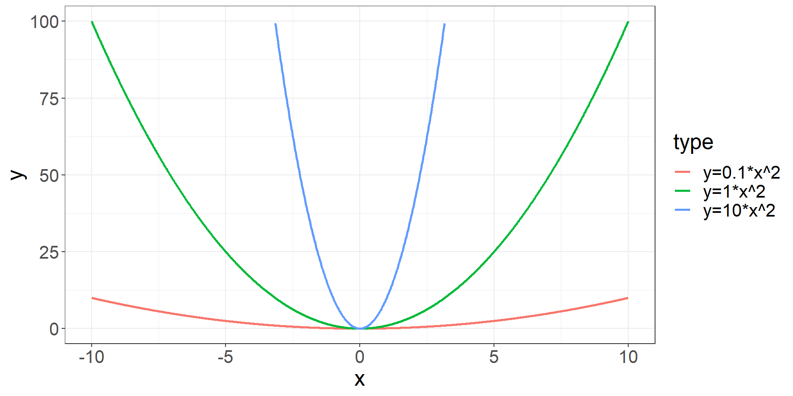
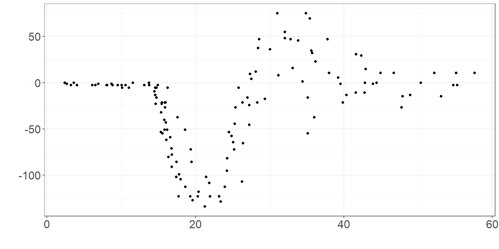
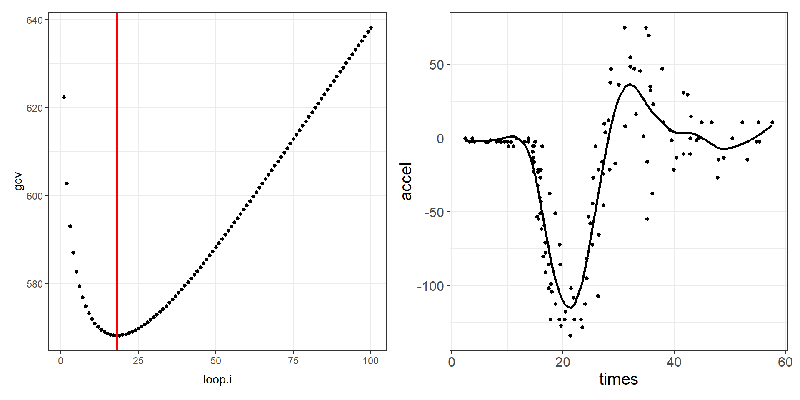
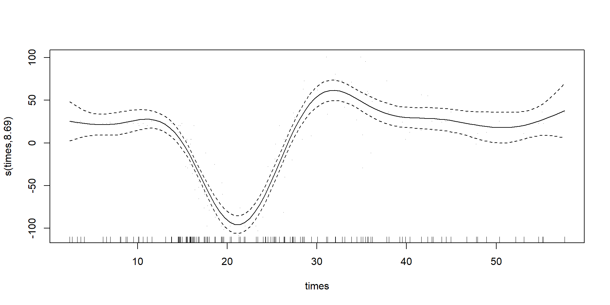
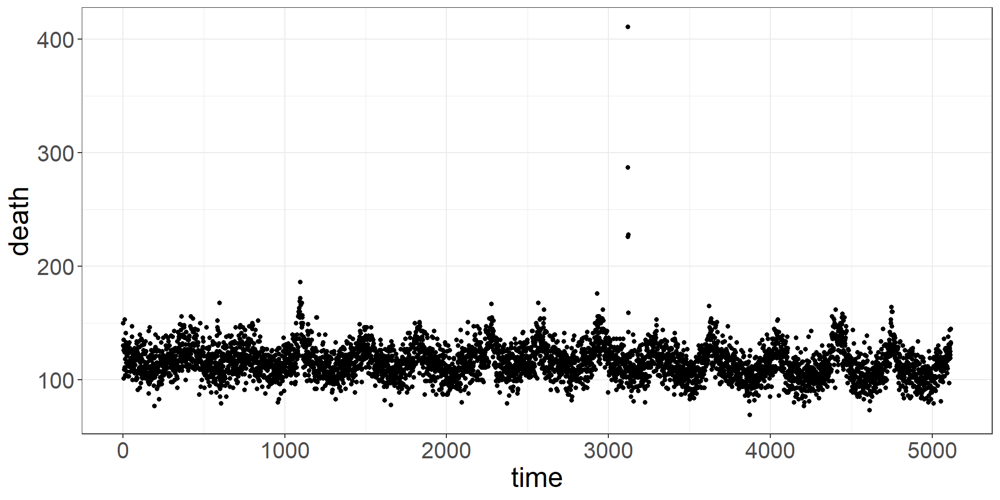
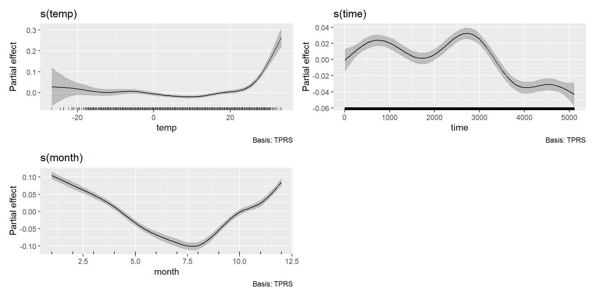

times accel
1 2.4 0.0
2 2.6 -1.3
3 3.2 -2.7
4 3.6 0.0
5 4.0 -2.7
6 6.2 -2.7Advanced Regression: Bias and variance trade off and penalised splines
Garyfallos Konstantinoudis
Imperial College London
Aug 2, 2024
Principles of non-linear regression
Concepts we cover in this lecture:
The basics of cross validation
Bias-variance trade-off in prediction
Penalised splines
A clarification
Note
Aim of prediction: Define a prediction rule that is accurate, but also generalises to new data.
When performing prediction we split the data into the following three subsets:
Training data to fit the models
Validation data to estimate extra parameters of the prediction rule
Test data to assess the generalisation properties
Training and test data
Assume we have the following data:
Training data
\(y_i\), where \(i\in1, …, n\)
\(x_i\), vector of \(j\in 1, …, p\) predictors for observation \(k\)
Test data
\(y_k^{\text{Test}}\), where \(k\in1, …, m\)
\(x_k^{\text{Test}}\), vector of \(j\in 1, …, p\) predictors for observation \(k\)
We assume the following general model to hold for both training and test data
\[y = f(x) + \epsilon\]
Measuring the quality of fit
- Based on the training data we build a prediction rule \(\hat{f}(x)\)
\[\hat{y}_i=\hat{f}(x_i)\]
For example the ordinary least squares prediction rule is defined as
\[\hat{y} = h y = x(x^t x)^{-1}x^t y = x \beta.\]
- We evaluate the prediction rule \(\hat{f}(x)\) (derived from the training data) on the test data \(x_k^{Test}\) and obtain the prediction \(\hat{y}_k^{Test}\)
\[\hat{y}_k^{Test} = \hat{f}(x_k^{Test}).\]
Mean squared error (MSE)
It is easy to derive the MSE on the training data, this is equivalent to the residual sum of squares.
The residual sum of squares do not tell us how well the prediction rule generalises to new data, the test data.
MSE evaluated on the test data
\[MSE =\frac{1}{m} \sum_{k=1}^{m} \left( \underbrace{y_k^{Test}}_{\text{Observed}} - \underbrace{\hat{f}(x_k^{Test})}_{\text{Predicted}} \right)^2\]
Decomposition into bias and variance
\(\begin{align}E(MSE) & = E (\frac{1}{m} \sum_{k=1}^{m} \left( y_k^{Test}- \hat{f}(x_k^{Test}) \right)^2 )\\ & = \underbrace{\sigma^2}_{\text{Noise}} + \underbrace{E[\hat{f}(x_k^{\text{Test}}) - E(\hat{f}(x_k^{\text{Test}}))]^2}_{\text{Variance}} + \\& + [E(\hat{f}(x_k^{\text{Test}})) - \hat{f}(x_k^{\text{Test}})]^2 \end{align}\)
Noise or irreducible error \(\sigma^2\)
Variance \(E [\hat{f}(x_k^{Test} - E(\hat{f}(x_k^{Test}))]^2\)
Bias \([E(\hat{f}(x_k^{Test})) - \hat{f}(x_k^{Test})]\)
Bias-variance trade-off in prediction
Bias: The error that is introduced by fitting the model.
More variables reduce the residual sum of squares.
We can reduce bias by adding more variables (higher complexity).
Variance: The amount by which \(\hat{f}(x)\) would change if we estimated it using a different training data set.
The more variables we include, the more likely \(\hat{f}(x)\) will differ for a new training data
We can reduce variance by removing variables (lower complexity)
Overfitting
Training MSE: We can always reduce the MSE by adding more variables (higher complexity).
Test MSE: After the model is saturated, we will increase the MSE by adding more variables.
The problem of overfitting
Overfitting the data
Complex models may be too precise and tailored only to the specific data used as training data.
They follow the error or noise too closely.
Complex models may provide perfect fit and very low MSE on the training data.
But when used to build a prediction rule for new data they will have a high MSE on the test data.
Thus, they do not generalise well to new data and do not provide a good prediction rule.
Measuring the quality of fit: Binary outcome
Quantitative outcomes: Mean squared error (MSE)
Binary outcome (Lecture 4):
Sensitivity and specificity
Misclassification error rate: Proportion of misclassified observations
Positive predictive value (PPV)
\(\begin{align} \text{PPV} & = \frac{\text{Number of true positives}}{\text{Number of true positives + Number of false positives}} \\ & = \frac{\text{Number of true positives}}{\text{Number of positive calls}}\end{align}\)
Bias-variance trade-off in estimation
Consider an estimate \(\hat{\theta}\) for a parameter \(\theta\).
Examples:
Sample mean \(\bar{x} = \frac{1}{n} \sum_{i=1}^{n} x_i\) for the population mean.
Sample variance \(s^2 = \frac{1}{n-1} \sum_{i=1}^{n} (x_i - \bar{x})^2\) for the population variance.
Bias of an estimate
\(Bias (\hat{\theta}) = E \left( \hat{\theta} - \theta \right) \nonumber\)
Bias-variance trade-off in estimation
Mean squared error (MSE) of an estimate \(\hat{\theta}\):
MSE is the squared average difference between an estimate \(\hat{\theta}\) and the true parameter \(\theta\).
\(\begin{align}MSE (\hat{\theta}) & = E \left( \hat{\theta} - \theta \right)^2 \\& = ( E(\hat{\theta}^2) - 2 E(\hat{\theta})\theta + \theta^2 ) \\& = ( E(\hat{\theta}^2) - \underbrace{E(\hat{\theta})^2 + E(\hat{\theta})^2}_0 - 2 E(\hat{\theta})\theta + \theta^2 ) \\& = ( E(\hat{\theta}^2) - E(\hat{\theta})^2) + (E(\hat{\theta})^2 - 2 E(\hat{\theta})\theta + \theta^2 ) \\& = Var (\hat{\theta}) + \left(Bias (\hat{\theta}) \right)^2 \end{align}\)
Bias-variance trade-off in estimation
Also in estimation there is a trade-off between bias and variance
\[MSE (\hat{\theta}) = Var (\hat{\theta}) + \left(Bias (\hat{\theta}) \right)^2\]
where
\(Var (\hat{\theta}) = E(\hat{\theta}^2) - E(\hat{\theta})^2\)
\(Bias (\hat{\theta}) = E(\hat{\theta}) - \theta = E(\hat{\theta} - \theta)\)
Many classical techniques are designed to be unbiased (BLUE) or consistent (Maximum Likelihood).
Recall previous problem
Can you identify issues with bias and variance?
How can we select the best fit?
Generic considerations
In regression splines, the smoothness of the fitted curve is determined by:
the degree of the spline
the specific parameterization
the number of knots
the location of knots
No general selection method for number and position of knots
Notice
The type of splines we have seen so far allow the use of standard estimation methods, derived by minimizing the usual least square objective:
\[\sum_i\Bigg(Y_i - \beta_0 - f(x;\beta) + \sum_p\gamma_pz_p\Bigg)^2,\]
where \(f(x;\beta) = \sum_j\beta_jb_j(x_i)\) the splines basis function, \(z\) a set of other covariates with corresponding coefficients \(\gamma\).
A penalised approach
A general framework of smoothing methods is offered by generalized additive models (GAMs).
GAMs extends traditional GLMs by allowing the linear predictor to depend linearly on unknown smooth functions. In the linear case:
\[Y_i = \beta_0 + f(x;\beta) + \sum_p\gamma_pz_p + \epsilon_i\]
The idea is to define a flexible function and control the smoothness through a penalty term, usually on the second derivative.
Curvature
The second derivative of a function corresponds to the curvature or concavity of the graph. What do you observe?
So if \(f(x;\beta)\) is the spline basis function we defined, then we need to somehow introduce its second derivative \(d^2f(x;\beta)/dx = f''(x; \beta)\) in the problem and `scale` it so we have the `best` fit.
Penalized splines
The objective now is to minimise the `augmented` sum of squares error:
\[\sum_i\Bigg(Y_i - \beta_0 - f(x;\beta) + \sum_p\gamma_pz_p\Bigg)^2 + \lambda \int [f''(x; \beta)]^2dx\]
with \(\lambda\) being the smoothing parameter (variance-bias trade off).
Smoothers
Alternative smoothers available, differing by parameterization and penalty:
Thin-plane splines
Cubic splines
P-splines
Random effects
Markov random fields
kernels
Soap film smooths
…
Selecting smoothness
There are different ways of selecting/estimating \(\lambda\)
The ordinary cross-validation (OCV) criterion, also known as the leave-one-out cross-validation (LOO-CV) criterion, seeks to find the \(\lambda\) that minimizes:\[\text{OCV}(\lambda) = \frac{1}{n}\sum_i(Y_i - g_{\lambda}^{[i]}(x_i))^2\]
The generalised cross-validation (GCV) criterion (an improvement of the OCV)
AIC and BIC
REML and ML
Example 1
A data frame giving a series of measurements of head acceleration in a simulated motorcycle accident, used to test crash helmets.
Example 1
Any ideas?
Example 1
I will use the \(\text{pspline}\) package to showcase how the selection of \(\lambda\) with GVC works:
library(pspline)
seq(from = 1, to = 100, length.out = 100) -> loop.i
gcv <- numeric(length(loop.i))
for (i in 1:length(loop.i)) {
smooth.Pspline(mcycle$times, mcycle$accel,
df = 4,
spar = loop.i[i], method = 1
) -> mod.loop
gcv[i] <- mod.loop$gcv
}
ggplot() +
geom_point(aes(x = loop.i, y = gcv), cex = 1.3) +
geom_vline(xintercept = loop.i[gcv %>% which.min()], col = "red", cex = 1) +
theme_bw() -> p1
smooth.Pspline(mcycle$times, mcycle$accel,
df = 4, spar = loop.i[gcv %>% which.min()],
method = 1
) -> mod.loop
ggplot() +
geom_point(data = mcycle, aes(x = times, y = accel), cex = 1.3) +
theme_bw() +
geom_line(aes(x = mcycle$times, y = mod.loop$ysmth), cex = 1) -> p2Example 1
Example 1 using GAM
Family: gaussian
Link function: identity
Formula:
accel ~ s(times)
Parametric coefficients:
Estimate Std. Error t value Pr(>|t|)
(Intercept) -25.546 1.956 -13.06 <2e-16 ***
---
Signif. codes: 0 '***' 0.001 '**' 0.01 '*' 0.05 '.' 0.1 ' ' 1
Approximate significance of smooth terms:
edf Ref.df F p-value
s(times) 8.691 8.972 53.13 <2e-16 ***
---
Signif. codes: 0 '***' 0.001 '**' 0.01 '*' 0.05 '.' 0.1 ' ' 1
R-sq.(adj) = 0.782 Deviance explained = 79.7%
GCV = 548.58 Scale est. = 508.61 n = 133Example 1 using GAM
Example 1 using GAM
mgcv::gam(accel ~ s(times), data = mcycle) -> mod.gam
predict(mod.gam, data.frame(times = mcycle$times), se.fit = TRUE) -> preds
UL <- preds$fit + 1.96 * preds$se.fit
LL <- preds$fit - 1.96 * preds$se.fit
ggplot() +
geom_point(data = mcycle, aes(x = times, y = accel), cex = 1.3) +
theme_bw() +
geom_line(aes(x = mcycle$times, y = preds$fit), lwd = 1) +
geom_ribbon(aes(ymin = LL, ymax = UL, x = mcycle$times), fill = "blue", alpha = 0.1) +
theme(text = element_text(size = 20))Case-study: Chicago - Temperature and mortality
Temperature is known to increase all-cause mortality rates
In such studies, we need to carefully account for the temporal aspect (long-term trends and seasonality)
We also need to properly account for factors that could confound the observed relationship.
GOAL: Use GAMs to explore the effect of temperature on mortality counts in Chicago.
Case-study: Chicago - Temperature and mortality
date time year month doy dow death cvd resp temp dptp
1 1987-01-01 1 1987 1 1 Thursday 130 65 13 -0.2777778 31.500
2 1987-01-02 2 1987 1 2 Friday 150 73 14 0.5555556 29.875
3 1987-01-03 3 1987 1 3 Saturday 101 43 11 0.5555556 27.375
4 1987-01-04 4 1987 1 4 Sunday 135 72 7 -1.6666667 28.625
5 1987-01-05 5 1987 1 5 Monday 126 64 12 0.0000000 28.875
6 1987-01-06 6 1987 1 6 Tuesday 130 63 12 4.4444444 35.125
rhum pm10 o3
1 95.500 26.95607 4.376079
2 88.250 NA 4.929803
3 89.500 32.83869 3.751079
4 84.500 39.95607 4.292746
5 74.500 NA 4.751079
6 77.375 40.95607 6.334412Case-study: Chicago - Temperature and mortality
Case-study: Chicago - Temperature and mortality
mgcv::gam(
death ~ s(temp) +
s(time) + s(month) + dow,
data = chicagoNMMAPS, family = "poisson"
) -> res.mod
summary(res.mod)
Family: poisson
Link function: log
Formula:
death ~ s(temp) + s(time) + s(month) + dow
Parametric coefficients:
Estimate Std. Error z value Pr(>|z|)
(Intercept) 4.727980 0.003476 1360.069 < 2e-16 ***
dowMonday 0.034849 0.004874 7.150 8.71e-13 ***
dowTuesday 0.027304 0.004884 5.590 2.27e-08 ***
dowWednesday 0.010857 0.004904 2.214 0.02683 *
dowThursday 0.013197 0.004899 2.694 0.00707 **
dowFriday 0.019705 0.004891 4.029 5.61e-05 ***
dowSaturday 0.022413 0.004888 4.585 4.54e-06 ***
---
Signif. codes: 0 '***' 0.001 '**' 0.01 '*' 0.05 '.' 0.1 ' ' 1
Approximate significance of smooth terms:
edf Ref.df Chi.sq p-value
s(temp) 8.332 8.847 238.9 <2e-16 ***
s(time) 7.705 8.573 330.6 <2e-16 ***
s(month) 8.504 8.934 524.2 <2e-16 ***
---
Signif. codes: 0 '***' 0.001 '**' 0.01 '*' 0.05 '.' 0.1 ' ' 1
R-sq.(adj) = 0.256 Deviance explained = 27.4%
UBRE = 0.41407 Scale est. = 1 n = 5114Case-study: Chicago - Temperature and mortality
Case-study: Chicago - Temperature and mortality
gratia::smooth_estimates(res.mod) %>%
gratia::add_confint() %>%
filter(smooth == "s(temp)") %>%
mutate(
est = exp(est), lower_ci = exp(lower_ci), upper_ci = exp(upper_ci),
temp = round(temp, digits = 2), rr = est / est[temp == 10.30],
rr_upper = upper_ci / est[temp == 10.30], rr_lower = lower_ci / est[temp == 10.30]
) %>%
ggplot() +
geom_line(aes(temp, rr)) +
geom_ribbon(aes(x = temp, ymin = rr_lower, ymax = rr_upper), alpha = 0.3, fill = "blue", col = NA) +
geom_hline(yintercept = 1, col = "red", linetype = "dashed") +
theme_bw() +
ylab("Mortality risk") +
xlab("Temperature") +
theme(text = element_text(size = 20))Case-study: Chicago - Temperature and mortality
How is the intercept interpreted? How the daily effect?
mgcv::gam(
death ~ s(temp) +
s(time) + s(month) + dow + s(pm10),
data = chicagoNMMAPS, family = "poisson"
) -> res.mod1
res.mod1 %>% summary()
Family: poisson
Link function: log
Formula:
death ~ s(temp) + s(time) + s(month) + dow + s(pm10)
Parametric coefficients:
Estimate Std. Error z value Pr(>|z|)
(Intercept) 4.731117 0.003637 1300.968 < 2e-16 ***
dowMonday 0.030381 0.005079 5.982 2.21e-09 ***
dowTuesday 0.021400 0.005066 4.224 2.40e-05 ***
dowWednesday 0.007126 0.005095 1.399 0.16186
dowThursday 0.007744 0.005087 1.522 0.12792
dowFriday 0.015253 0.005094 2.994 0.00275 **
dowSaturday 0.019715 0.005043 3.909 9.25e-05 ***
---
Signif. codes: 0 '***' 0.001 '**' 0.01 '*' 0.05 '.' 0.1 ' ' 1
Approximate significance of smooth terms:
edf Ref.df Chi.sq p-value
s(temp) 8.314 8.840 172.7 < 2e-16 ***
s(time) 7.817 8.639 310.0 < 2e-16 ***
s(month) 8.475 8.926 431.9 < 2e-16 ***
s(pm10) 1.001 1.002 22.5 1.8e-06 ***
---
Signif. codes: 0 '***' 0.001 '**' 0.01 '*' 0.05 '.' 0.1 ' ' 1
R-sq.(adj) = 0.256 Deviance explained = 27.5%
UBRE = 0.4123 Scale est. = 1 n = 4863Case-study: Chicago - Temperature and mortality
Let’s add the effect of air-pollution (PM10):
gratia::smooth_estimates(res.mod1) %>%
gratia::add_confint() %>%
filter(smooth == "s(pm10)") %>%
ggplot() +
geom_line(aes(pm10, est), lwd = 1) +
geom_ribbon(aes(x = pm10, ymin = lower_ci, ymax = upper_ci), alpha = 0.3, fill = "blue", col = NA) +
theme_bw() +
ylab("Mortality risk") +
xlab("PM10") +
theme(text = element_text(size = 20))Case-study: Chicago - Temperature and mortality
Family: poisson
Link function: log
Formula:
death ~ s(temp) + s(time) + s(month) + dow + s(pm10)
Parametric coefficients:
Estimate Std. Error z value Pr(>|z|)
(Intercept) 4.731117 0.003637 1300.968 < 2e-16 ***
dowMonday 0.030381 0.005079 5.982 2.21e-09 ***
dowTuesday 0.021400 0.005066 4.224 2.40e-05 ***
dowWednesday 0.007126 0.005095 1.399 0.16186
dowThursday 0.007744 0.005087 1.522 0.12792
dowFriday 0.015253 0.005094 2.994 0.00275 **
dowSaturday 0.019715 0.005043 3.909 9.25e-05 ***
---
Signif. codes: 0 '***' 0.001 '**' 0.01 '*' 0.05 '.' 0.1 ' ' 1
Approximate significance of smooth terms:
edf Ref.df Chi.sq p-value
s(temp) 8.314 8.840 172.7 < 2e-16 ***
s(time) 7.817 8.639 310.0 < 2e-16 ***
s(month) 8.475 8.926 431.9 < 2e-16 ***
s(pm10) 1.001 1.002 22.5 1.8e-06 ***
---
Signif. codes: 0 '***' 0.001 '**' 0.01 '*' 0.05 '.' 0.1 ' ' 1
R-sq.(adj) = 0.256 Deviance explained = 27.5%
UBRE = 0.4123 Scale est. = 1 n = 4863Case-study: Chicago - Temperature and mortality
Lag effect
The effect of an exposure might not only affect the same day’s health outcome, but also the health outcome in the subsequent days.
Lets explore the temperature lags independently in Chicago.
Case-study: Chicago - Temperature and mortality
k <- c(0, 1, 3, 5, 10, 20)
res_store <- list()
for (i in 1:length(k)) {
chicagoNMMAPS$temperature_laggeg <- lag(chicagoNMMAPS$temp, n = k[i])
mgcv::gam(
death ~ s(temperature_laggeg) +
s(time) + s(month) + dow + pm10,
data = chicagoNMMAPS, family = "poisson"
) %>%
gratia::smooth_estimates() %>%
gratia::add_confint() %>%
filter(smooth == "s(temperature_laggeg)") %>%
mutate(
est = exp(est),
lower_ci = exp(lower_ci),
upper_ci = exp(upper_ci),
temperature_laggeg = round(temperature_laggeg, digits = 2),
rr = est / est[temperature_laggeg == 10.30],
rr_upper = upper_ci / est[temperature_laggeg == 10.30],
rr_lower = lower_ci / est[temperature_laggeg == 10.30],
lag = paste0("lag", k[i])
) -> res_store[[i]]
}
do.call(rbind, res_store) %>%
mutate(lag = factor(lag, levels = c(paste0("lag", k)))) %>%
ggplot() +
geom_line(aes(temperature_laggeg, rr, col = lag), lwd = 1) +
geom_ribbon(aes(x = temperature_laggeg, ymin = rr_lower, ymax = rr_upper, fill = lag), alpha = 0.3, col = NA) +
geom_hline(yintercept = 1, col = "red", linetype = "dashed", lwd = 1) +
theme_bw() +
ylab("Mortality risk") +
xlab("Temperature") +
ylim(c(0.7, 1.7)) +
scale_fill_viridis_d(option = "C") +
scale_color_viridis_d(option = "C") -> p28Case-study: Chicago - Temperature and mortality
What do you observe?
Why curves are similar?
Is independence a valid assumption?
Summary
Introduction to bias and variance trade off
Theory and application of penalised splines
How can we model lags properly?
Questions?